Integration of Planck’s Law of Black Body Radiation Over an Interval¶
Reference¶
Integration of the Planck blackbody radiation function, W. K. Widger, Jr. and M. P. Woodall, Bulletin American Meteorological Society, Vol. 57, No. 10, Oct 1976, pp. 1217-1219
The above reference describes a mechanism for integration of Planck’s law of black body radiation over a band of wavelengths without resorting to numerical methods that require a large number of iterations. The derivation is repeated here as an exercise.
Planck’s Law of Black Body Radiation¶
Planck’s law of black body radiation states:
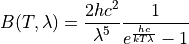
Or in terms of the radiation constants:
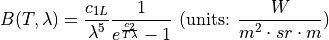
Where the radiations constants are defined as:
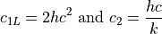
This may be integrated to determine the radiance over a band of wavelengths:
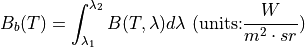
For a discrete spectral band, this may be replaced by:
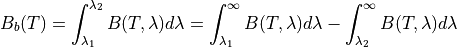
Assume a substitution of variables:
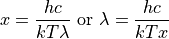
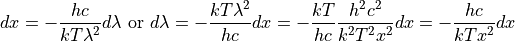
Performing the substitution (ignoring the limits for now):
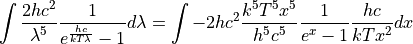
Now for some algebraic manipulation:
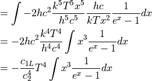
Multiple top and bottom by :
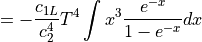
The series expansion:
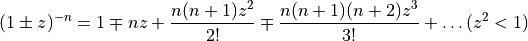
If we let and :
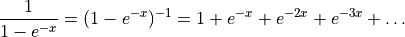
Note that  is always greater than zero because all of the factors that define it are positive. As a result, 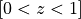 and 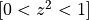, as required.
The integral can then be rewritten:
is always greater than zero because all of the factors that define it are positive. As a result, 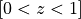 and 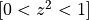, as required.
The integral can then be rewritten:
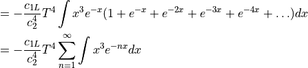
The integral can be explicitly evaluated using integration by parts:
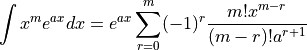
With and we have:
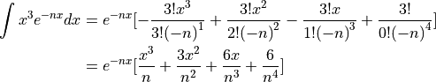
Substituting this for the integral in the summation we have:
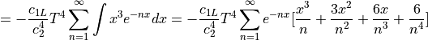
The paper had an additional simplification that was stated to require fewer iterations for the same accuracy. We will not be using it because it varied from the direct numeric integration for low temperatures (<100 K) and short wavelengths (short than infrared), and the performance improvements were small or not observed. But I will include it here for completeness.
Note the following series:

Let ,
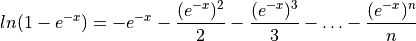
The first term of the summation can then be replaced:
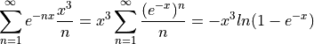
And the integral can be updated:
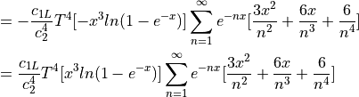